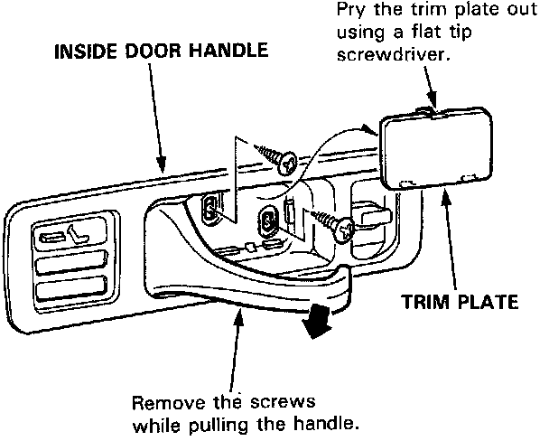
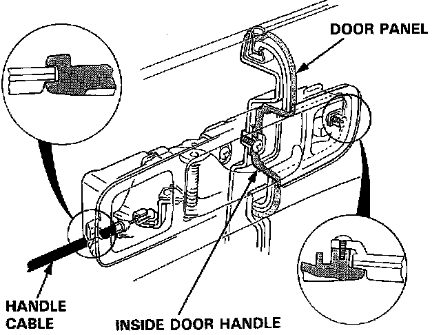
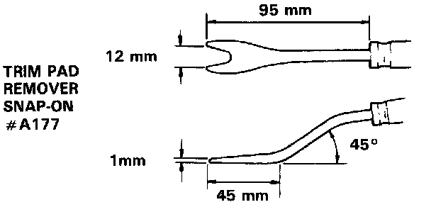
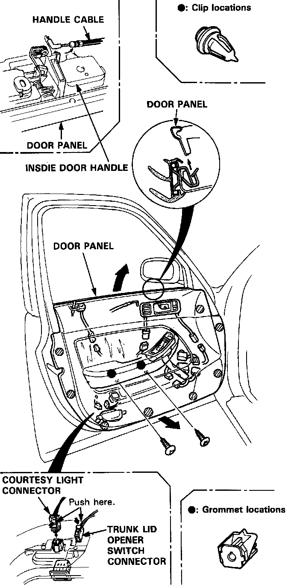
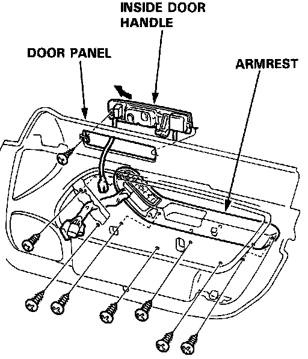
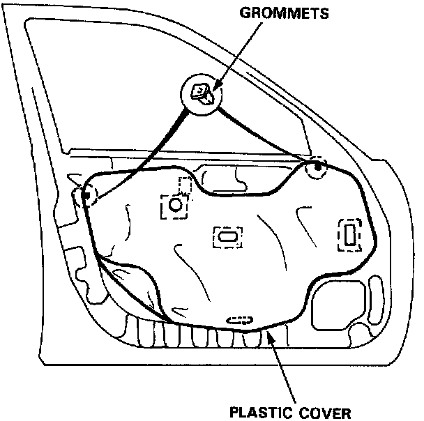
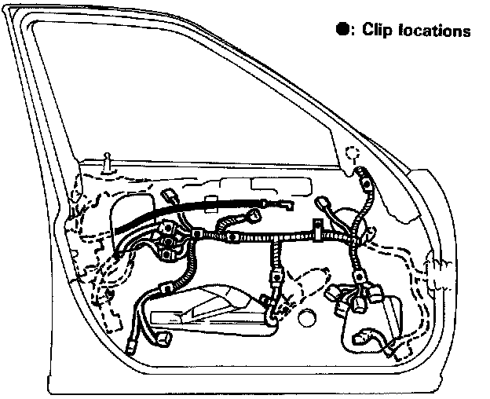
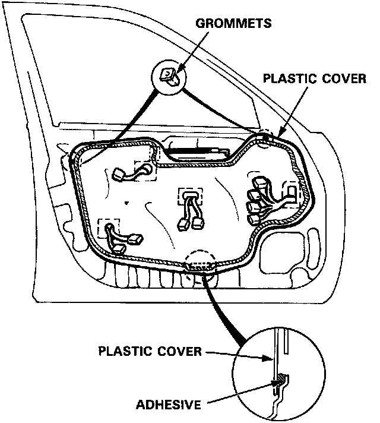

Front Door Panel: Service and Repair
Front Door Panel/Plastic Cover Replacement
1. Remove the trim plate, then remove the door panel mounting screws.

NOTE: Do not remove the inside door handle from the door panel.
Trim pad remover:

NOTE: Remove the panel with as little bending as possible to avoid creasing or breaking it.

2. Remove the screws and clips (see trim pad remover) attaching the door panel.
Remove the door panel by pulling it upward and disconnect the handle cable.
Disconnect the following connectors:
^ Trunk lid opener switch
^ Power door lock switch
^ Courtesy light
^ Power window/door mirror switch
^ Security alarm
^ Power seat memory switch

3. If necessary, remove the armrest and inside door handle from the door panel.

4. Remove the grommets and carefully remove the plastic cover.


5. Install the door panel and plastic cover in the reverse order of removal.
NOTES:
^ Make sure the wire harnesses and connectors are fastened correctly on the door.
^ Apply adhesive along the edge where necessary to maintain a continuous seal and prevent air/water leaks.
^ Before tightening the door panel mounting screws, make sure the wire harnesses are not pinched.